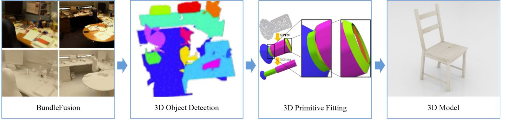

Computer
This page is a collection of computer-related activities.
▶Computer Graphics
Project : Mirror Room scene by Ray Tracing
Optimized scene using Data Structure(Octree).As a result, Improves scene speed by 8x with octree.
▶Interactive Visualization
Project : Particle System
GPU based Particle SystemImplementation of the Physical Environment of the Particle System based on the Sample Code provided by CUDA
Particle Number : 10000
Sky Box Implementation AND Cloud picture Texture Mapping
Tornado Path Following Implementation - Each particle gives a force that follows a circular orbit and a force that rises
Final Report Download
▶(Deep Learning) Reconstruct indoor scene.
3D Room-scale Reconstruction
Reconstruct indoor scene3D Scan in Room-scale(BundleFusion)
3D Object Detection (3D-BoNet)
3D Primitive Fitting (SPFN, Supervised Primitive Fitting Network)

▶Artificial Inteligence
GAN Experience
Using GAN. Image Generation and Generate voice and images with Cycle GANDown below, we use satellite maps and Google Maps.
This is the picture that created the Fake Map and the Fake Picture through Cycle GAN Architecture.

Final Report download Link